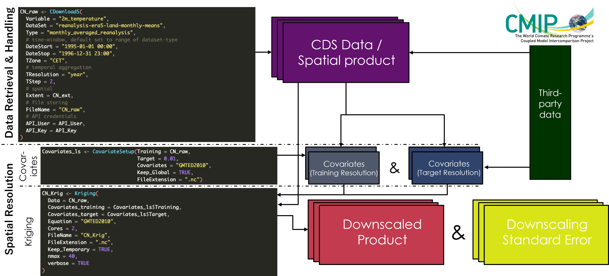
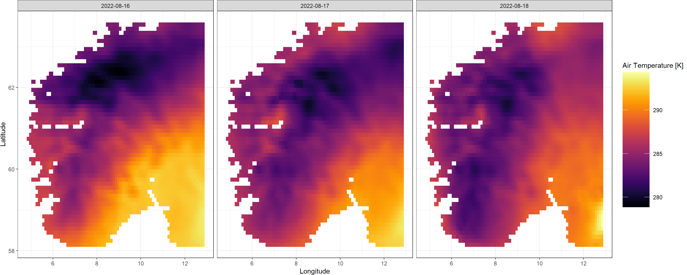
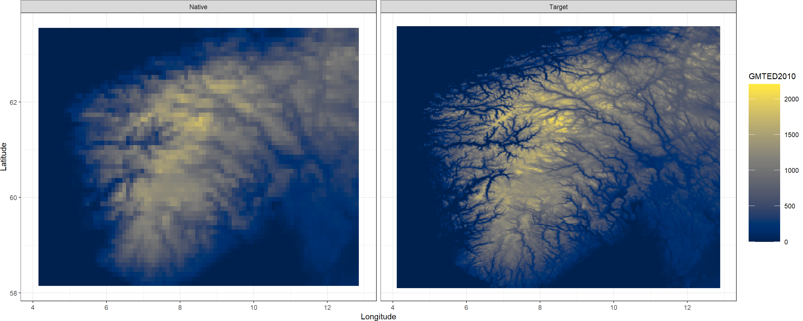
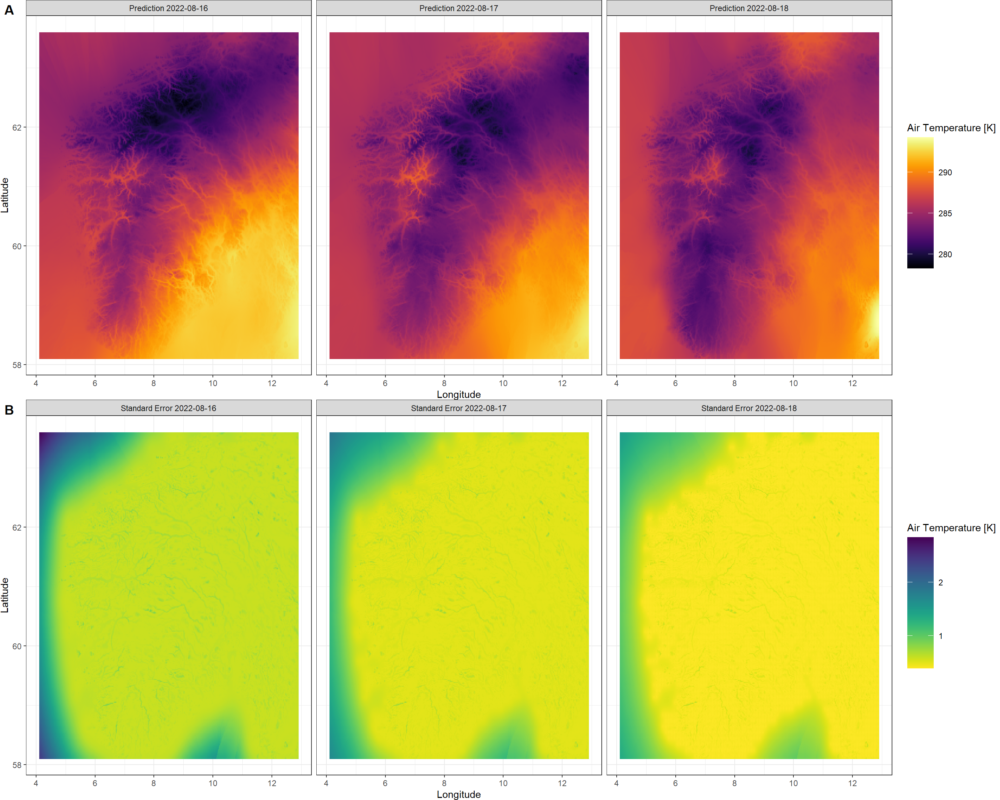

Quick Guide
KrigR and I highly recommend you peruse the rest of the content, too. If you are already committed to going through the more thorough workshop material in the Workshop tab on the left, I would recommend skipping this quickstart guide as you will gain more knowledge at a more approachable pace in that more exhaustive part of the material.
Pre-KrigR Housekeeping
Before we can commence the quick start guide, I want to set up a directory structure and prepare some plotting functions to make the rest of the guide run more smoothly.
CDS API Credentials
As explained in the
KrigR setup, please register your CDS API credentials into your R session like so:
API_User <- "youremail@somethingortheother"
API_Key <- "YourApiKeyGoesHereAsACharacterString"
Setting up Directories
For this guide to run in a structured way, we create a folder/directory structure. We create the following directories:
- A Data directory for all of our data downloads
- A Covariate directory for all of our covariate data
- An Exports directory for all of our Kriging outputs
Dir.Base <- getwd() # identifying the current directory
Dir.Data <- file.path(Dir.Base, "Data") # folder path for data
Dir.Covariates <- file.path(Dir.Base, "Covariates") # folder path for covariates
Dir.Exports <- file.path(Dir.Base, "Exports") # folder path for exports
## create directories, if they don't exist yet
Dirs <- sapply(
c(Dir.Data, Dir.Covariates, Dir.Exports),
function(x) if (!dir.exists(x)) dir.create(x)
)
rm(Dirs) # we don't need to keep the response to directory creation
Using KrigR
Before we start these exercises, we need to load KrigR:
library(KrigR)
Since KrigR works with terra objects to handle raster data, we may also want to load the terra package at this point:
library(terra)
KrigR is conceptualised around a three-step progression through its functionality using the three core functions CDownloadS(), CovariateSetup(), and Kriging():

Data Retrieval & Handling - CDownloadS()
Using the CDownloadS() function, you gain access to a number of CDS-hosted data products. More details on how you can find out which data products are supported and how to query them, refer to the
Finding CDS-Hosted Data Products section. For the sake of this quickstart overview of KrigR capabilities, we will execute a very simple call to CDownloadS(). For a deeper understanding of the capabilities of KrigR for CDS-data download and processing, please refer to the
Data Retrieval & Handling
The most simple way in which you can run the functions of the KrigR package is by specifying a rectangular bounding box (i.e., an SpatExtent) to specify your study region(s). For this quickstart, we focus on an area covering southern and central Norway:
Extent_ext <- ext(c(4.05, 12.95, 58.05, 63.55))
Extent_ext
## SpatExtent : 4.05, 12.95, 58.05, 63.55 (xmin, xmax, ymin, ymax)
Next, you specify, which variable, from which data product, for which time-window you want to obtain and at which temporal resolution. For this part of the workshop, we download air temperature for a three-day interval around 2022-08-18 - when I camped on a mountain flank below Hurrungane facing Fannaråki - the mountain that inspired my relocation to Norway. Loaded with this information, CDownloadS() then executes preliminary checks of validity of your data request, breaks the request into separate chunks if it is too big to be handled by CDS all at once, hands the request to CDS, waits for request completion on CDS followed by data download, spatial limiting, temporal aggregation, and finally, saving of the resulting file to your hard drive.
CDownloadS() terminates with an error message containing the URL to the data product page where you will find a “Terms of use” section under which you need to accept the required license(s).
## Note that I have already downloaded the QuickStart raw data and CDownloadS() is simply loading this from the disk for me here. Your console output while CDownloadS() is being executed will look differently.
QuickStart_Raw <- CDownloadS(
## Variable and Data Product
Variable = "2m_temperature", # this is air temperature
DataSet = "reanalysis-era5-land", # data product from which we want to download
## Time-Window
DateStart = "2022-08-17", # date at which time window opens
DateStop = "2022-08-19", # date at which time window terminates
TZone = "CET", # European Central Time to align with our study region
## Temporal Aggregation
TResolution = "day", # we want daily aggregates
TStep = 1, # we want aggregates of 1 day each
## Spatial Limiting
Extent = Extent_ext, # our rectangular bounding box
## File Storing
Dir = Dir.Data, # where to store the data
FileName = "QuickStart_Raw", # what to call the resulting file
## API User Credentials
API_User = API_User,
API_Key = API_Key
)
## ###### CDS Request & Data Download
## [1] "Building request"
## [1] "Checking request validity"
## [1] "A file with the name QuickStart_Raw.nc already exists in C:/Users/erikkus/Documents/Homepage/content/courses/krigr/Data."
## [1] "Loading this file for you from the disk."
QuickStart_Raw
## class : SpatRaster
## dimensions : 55, 88, 3 (nrow, ncol, nlyr)
## resolution : 0.1, 0.1 (x, y)
## extent : 4.1, 12.9, 58.1, 63.6 (xmin, xmax, ymin, ymax)
## coord. ref. : lon/lat Coordinate System imported from GRIB file
## source : QuickStart_Raw.nc
## names : QuickStart_Raw_1, QuickStart_Raw_2, QuickStart_Raw_3
## time : 2022-08-16 to 2022-08-18 CEST
See how we have obtained a SpatRaster corresponding the three dates we indicated to CDownloadS()? Great! The raw, hourly ERA5-Land data we queried has been aggregated to daily intervals as specified by us. You may also notice that the SpatRaster we obtained has a slightly different extent than what we queried. This is because CDS aligns the data with a data product specific grid. If in doubt on this, simply specify a slightly larger extent than you ultimately need for your study.
Using the KrigR function Plot.SpatRast(), we can easily visualise the data we just obtained.
Plot.SpatRast(QuickStart_Raw)

As you can see the CDownloadS() function updates you on what it is currently working on at each major step. I implemented this to make sure people don’t get too anxious staring at an empty console in R. If this feature is not appealing to you, you can turn this progress tracking off by setting verbose = FALSE in the function call to CDownloadS().
CDownloadS() also saves metadata pertaining to your download & handling query directly to the final output. While we store all settings of your function call (sans your API credentials), the most relevant metadata appended to your files obtained with CDownloadS() will most likely be the citation command by which to reference this data in your subsequent research outputs. You can retrieve this information as follows:
metags(QuickStart_Raw)["Citation"]
## Citation
## "reanalysis-era5-land data (DOI:10.24381/cds.e2161bac) obtained with KrigR (DOI:10.1088/1748-9326/ac48b3) on 2024-10-04 14:29:18.291047"
CDownloadS() function and ensure you receive the data you require can be found here.
Keep in mind that every function within the KrigR package produces NetCDF (.nc) or TIFF (.tif) files (depending on your specification of the FileExtension argument in CDownloadS()) in the specified directory (Dir argument in the function call) to allow for further manipulation outside of R if necessary (for example, using Panoply).
Downscaling Covariates - CovariateSetup()
Next, we use the CovariateSetup() function which comes with KrigR to obtain elevation data as our covariate of choice. This produces two SpatRasters:
- A raster of training resolution which matches the input data in all attributes except for the data in each cell.
- A raster of target resolution which matches the input data as closely as possible in all attributes except for the resolution (which is specified by the user).
Both of these products are bundled into a list where the first element corresponds to the training resolution and the second element contains the target resolution covariate data. Here, we specify a target resolution of .02.
SpatRaster which should be matched in all attributes by the raster at target resolution.
## Note that I have already downloaded the global GMTED2010 data with this function prior, your output will show the download itself as well
Covs_ls <- CovariateSetup(
Training = QuickStart_Raw,
Target = .02,
Dir = Dir.Covariates,
Keep_Global = TRUE
)
## [1] "GMTED2010 covariate data already downloaded."
Covs_ls
## $Training
## class : SpatRaster
## dimensions : 55, 88, 1 (nrow, ncol, nlyr)
## resolution : 0.1, 0.1 (x, y)
## extent : 4.1, 12.9, 58.1, 63.6 (xmin, xmax, ymin, ymax)
## coord. ref. : lon/lat WGS 84 (EPSG:4326)
## source : Covariates_Train.nc
## name : GMTED2010
##
## $Target
## class : SpatRaster
## dimensions : 330, 528, 1 (nrow, ncol, nlyr)
## resolution : 0.01666667, 0.01666667 (x, y)
## extent : 4.09986, 12.89986, 58.09986, 63.59986 (xmin, xmax, ymin, ymax)
## coord. ref. : lon/lat WGS 84 (EPSG:4326)
## source : Covariates_Target.nc
## name : GMTED2010
Again, we can use a KrigR plotting function to easily visualise this data:
Plot.Covariates(Covs_ls)

CovariateSetup() function can also be used to prepare raster data you already have at hand for use in subsequent Kriging.
Statistical Downscaling - Kriging()
Now let’s statistically downscale the data we just obtained with the covariates we just prepared. We do so using the Kriging() function:
QuickStart_Krig <- Kriging(
Data = QuickStart_Raw, # data we want to krig as a raster object
Covariates_training = Covs_ls[[1]], # training covariate as a raster object
Covariates_target = Covs_ls[[2]], # target covariate as a raster object
Equation = "GMTED2010", # the covariate(s) we want to use
nmax = 40, # degree of localisation
Cores = 3, # we want to krig using three cores to speed this process up
FileName = "QuickStart_Krig", # the file name for our full kriging output
Dir = Dir.Exports # which directory to save our final input in
)
QuickStart_Krig
## $Prediction
## class : SpatRaster
## dimensions : 330, 528, 3 (nrow, ncol, nlyr)
## resolution : 0.01666667, 0.01666667 (x, y)
## extent : 4.09986, 12.89986, 58.09986, 63.59986 (xmin, xmax, ymin, ymax)
## coord. ref. : lon/lat Coordinate System imported from GRIB file
## source : QuickStart_Krig_Kriged.nc
## varname : QuickStart_Raw
## names : QuickStart~g_Kriged_1, QuickStart~g_Kriged_2, QuickStart~g_Kriged_3
## time : 2022-08-16 to 2022-08-18 CEST
##
## $StDev
## class : SpatRaster
## dimensions : 330, 528, 3 (nrow, ncol, nlyr)
## resolution : 0.01666667, 0.01666667 (x, y)
## extent : 4.09986, 12.89986, 58.09986, 63.59986 (xmin, xmax, ymin, ymax)
## coord. ref. : lon/lat Coordinate System imported from GRIB file
## source : QuickStart_Krig_STDev.nc
## varname : QuickStart_Raw
## names : QuickStart~ig_STDev_1, QuickStart~ig_STDev_2, QuickStart~ig_STDev_3
## time : 2022-08-16 to 2022-08-18 CEST
This operation took 2 seconds on my machine (this may vary drastically on other devices). There we go. All the data has been downscaled and we do have uncertainties recorded for all of our outputs. Let’s visualise this again with a KrigR function - Plot.Kriged():
Plot.Kriged(QuickStart_Krig)

As you can see, the elevation patterns show up clearly in our kriged air temperature output. Seems like Norway got warmer the day I left camp on August of 2022 - I do remember the night from the 18th to the 19th being the first clear night after a few days of constant cloud cover and it did get cold in my tent that night, but the heat during daytime thereafter seems to have balanced that out and swung the daily average into being a warmer day. Furthermore, you can see that our certainty of Kriging predictions steadily increases towards the 2022-08-18 in comparison to the preceding days. However, do keep in mind that a maximum standard error of 2.84, 1.89, 1.5 (for each layer of our output respectively, and across the sea at that, where there are no topographical variations we can exploit for kriging) on a total range of data of 15.31, 14.8, 14.73 (again, for each layer in the output respectively) is evident of a downscaling result we can be confident in.
krigR() function can be found here.
KrigR. For more effective use of the KrigR toolbox, I suggest you peruse the rest of the workshop material or use the search function if you have specific queries.
Session Info
sessionInfo()
## R version 4.4.0 (2024-04-24 ucrt)
## Platform: x86_64-w64-mingw32/x64
## Running under: Windows 11 x64 (build 22631)
##
## Matrix products: default
##
##
## locale:
## [1] C
##
## time zone: Europe/Oslo
## tzcode source: internal
##
## attached base packages:
## [1] stats graphics grDevices utils datasets methods base
##
## other attached packages:
## [1] terra_1.7-78 KrigR_0.4.0
##
## loaded via a namespace (and not attached):
## [1] tidyselect_1.2.1 viridisLite_0.4.2 dplyr_1.1.4 farver_2.1.2
## [5] viridis_0.6.5 R.utils_2.12.3 fastmap_1.2.0 reshape_0.8.9
## [9] blogdown_1.19 digest_0.6.37 timechange_0.3.0 lifecycle_1.0.4
## [13] sf_1.0-17 magrittr_2.0.3 compiler_4.4.0 rlang_1.1.4
## [17] sass_0.4.9 progress_1.2.3 doSNOW_1.0.20 tools_4.4.0
## [21] utf8_1.2.4 yaml_2.3.10 knitr_1.48 FNN_1.1.4.1
## [25] prettyunits_1.2.0 labeling_0.4.3 sp_2.1-4 classInt_0.4-10
## [29] plyr_1.8.9 abind_1.4-8 KernSmooth_2.23-22 R.cache_0.16.0
## [33] withr_3.0.1 purrr_1.0.2 R.oo_1.26.0 grid_4.4.0
## [37] fansi_1.0.6 xts_0.14.0 e1071_1.7-16 colorspace_2.1-1
## [41] ggplot2_3.5.1 scales_1.3.0 iterators_1.0.14 cli_3.6.3
## [45] rmarkdown_2.28 crayon_1.5.3 intervals_0.15.5 generics_0.1.3
## [49] httr_1.4.7 ncdf4_1.23 DBI_1.2.3 pbapply_1.7-2
## [53] cachem_1.1.0 proxy_0.4-27 ecmwfr_2.0.2 stringr_1.5.1
## [57] stars_0.6-6 parallel_4.4.0 vctrs_0.6.5 jsonlite_1.8.8
## [61] bookdown_0.40 hms_1.1.3 foreach_1.5.2 jquerylib_0.1.4
## [65] tidyr_1.3.1 units_0.8-5 snow_0.4-4 glue_1.7.0
## [69] codetools_0.2-20 cowplot_1.1.3 gstat_2.1-2 lubridate_1.9.3
## [73] stringi_1.8.4 gtable_0.3.5 munsell_0.5.1 tibble_3.2.1
## [77] styler_1.10.3 pillar_1.9.0 htmltools_0.5.8.1 R6_2.5.1
## [81] automap_1.1-12 evaluate_0.24.0 lattice_0.22-6 highr_0.11
## [85] R.methodsS3_1.8.2 memoise_2.0.1 bslib_0.8.0 class_7.3-22
## [89] Rcpp_1.0.13 gridExtra_2.3 spacetime_1.3-2 xfun_0.47
## [93] zoo_1.8-12 pkgconfig_2.0.3